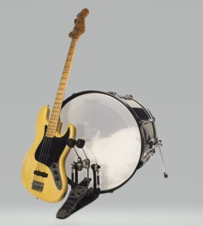
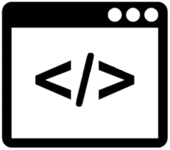
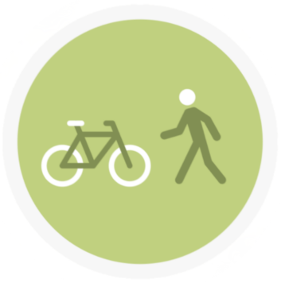

Music
I am very passionate about music. I have loved to listen
to music ever since I was little, and was lucky to be given the chance
to learn to play at the School of Rock.
The school of Rock was where I first learned to play and
fall in love with my instruments. It was there I learned to play four
instruments: Drums, Bass, Guitar, and Keyboard. I went and learned a
fifth one by myself, the Ocarina.
I would probably say the 2 instruments I enjoy playing
the most is Drums and Bass.

Programming
I really thoroughly enjoy programming, I started out
taking some programming classes in high school and from then on I
knew what I wanted to do.
I have learned a good variety of languages since my
time at Virginia Tech: Python, Java, Javascript, C, C++, HTML,
and CSS. Some in class and some from online courses like Udemy and
LinkedIn.

Walking/Biking
I used to be more of an inside person, but after a
little while at VT, I started to really enjoy going outside. Luckily
there is a surplus of trails around campus to walk and bike through
many different scenes.
I love the cold, so my favorite time to walk is in Fall
and Winter. As long as it's not freezing, I love going outside in
just shorts and a T-shirt when its cold.